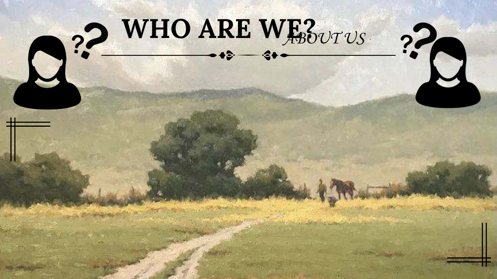

This commercial website was created by Kylence Myere A. Chavez and Kareemah A. Gabir, two STEM students of Zamboanga City Highschool Main (ZCHS). The website they created highlights the beauty of Zamboangueño cultures. It showcases the history, cuisines, and eye-catching sceneries. Visitors can explore the vibrant traditions, delectable dishes, and breathtaking landscapes that make Zamboanga a truly special place. The website serves as a valuable resource for anyone interested in learning more about this rich and diverse culture.
